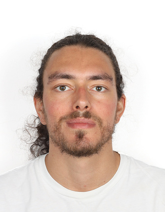

Abierto a nuevos proyectos
Soy Aaron Henríquez, desarrollador full stack formado en Aplicaciones Web y Multiplataforma. Construyo interfaces web y móviles fáciles de usar y el backend con Nest.js y Python que las sostiene, con bases de datos bien diseñadas detrás.

Sobre mí
De la interfaz a la base de datos, y de vuelta.
Diseño y programo la parte de una aplicación que ve el usuario y también la que no ve.
En el Departamento Informático del Auditorio Alfredo Kraus programé frontend y backend, diseñé para web y móvil y creé las bases de datos. En el Jardín Botánico Viera y Clavijo fui desarrollador de interfaz de usuario y de bases de datos, con Python sobre Odoo y entornos en Docker.
Hoy desarrollo con Nest.js y Python, analizo datos y pruebo la web antes de que llegue a producción. Me importa que el resultado sea fácil de usar por fuera y ordenado por dentro.
Colaborador
Trabajo bien en equipo, con diseño y con backend, y comparto lo que sé.
Flexible
Me muevo entre la interfaz y el servidor según lo que necesite el proyecto.
Ganas de aprender
Cada puesto me ha sumado tecnologías nuevas, y quiero que siga siendo así.
- 2020 — 2021CFGS Desarrollo de Aplicaciones MultiplataformaIES El Rincón
- 2018 — 2020CFGS Desarrollo de Aplicaciones WebIES Ana Luisa Benítez
También
- Castellano nativo
- Inglés B2
- Programa de Garantía Juvenil
- Carné de manipulador de alimentos
Trayectoria
Dónde he trabajado y con qué.
Elige tecnologías para filtrar los puestos. La consulta se escribe sola.
3 filas
- Programación en JavaScript con Nest.js y en Python
- Análisis de datos
- Testeo de la web
- Tratamiento de ficheros Excel y CSV
- Nest.js
- Python
- Datos
- Testing
- Desarrollo de la interfaz de usuario y de la base de datos
- Programación en Python sobre el CRM Odoo
- Entornos con Docker y Docker Compose
- Testeo de la web
- Tratamiento de ficheros Excel y CSV
- Interfaz
- Python
- Odoo
- Docker
- Programación frontend y backend
- Diseño web y móvil
- Creación, diseño y gestión de bases de datos
- Frontend
- Backend
- Web y móvil
- Bases de datos
Ningún puesto combina todas esas tecnologías. Quita alguna para ver resultados.
Contacto
Hablemos.
Busco un equipo donde aportar tanto en frontend como en backend. Escríbeme o llámame y te respondo.